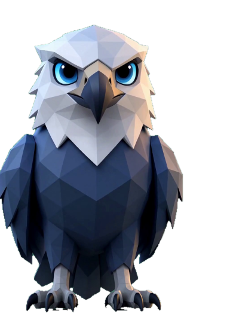

好巧，又见面了。 — 雕哥
DANNY
+
ON THE ROAD · CINEMATIC DRIVE · SCENIC EDITION
黄昏海岸 · 沿路向前
⌘ 路线
? 帮助
♫ MUSIC
⛶ FULL
↩ 返回
电影入口
按 E 进入，或点击场景中的载体
SUNSET FM
原创合成氛围电台 / 支持本地 MP3
▶ 播放
⇥ 换台
＋ 本地
↶
Ⅱ
▶
海湾公路 / 连续地图
↶ 倒车 · → 加速 · E 作品 · 空格暂停 · M 音乐
↶ 回退
E · 作品
快一点 →
TRAVEL / EXPLORE
沿途发现
场景只负责旅行，作品通过配置连接。选择地点可快速到附近。
✕ 继续驾驶
作品空位
✕ 返回公路
YOUR FILM GOES HERE
本地配置视频文件，无需上传